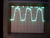
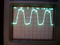

The following measurements were made on an operating layout. It is powered by a single DCS100 (Chief) booster, with PM4 units for power subdistricts and DS54 units for various controls. Track power was on, and the DCS100 was in "run" mode, i.e. sending packets on the rails. About 1.2A was being drawn from the DCS100 booster output. During the measurements, no LocoNet commands were sent, nor were reversing sections being traversed.
Unfortunately, the camera scope photos wasn't sufficiently sensitive, so they show a lot of blur. In all pictures, the ground reference was centered and the vertical scale was 5V/division. The scope was line triggered. Only a single trace is shown.
For the rest of the measurements, I reconnected the DCS100 ground to the power ground. Both noise and offset were then less than 20mV.
With respect to system ground, the Rail A and Rail B lines alternate between 12V and about 0.8V:


It appears that the DCS100 internal high-power supply is only positive. To get a better understanding
of that, I looked at the two power in lines from the transformer:


Note they are both positive at all times, not centered on ground. The lowest voltage is about 1.3V below
ground. This is characteristic of a full-wave rectifier supply with one side of the output grounded.
The small offset is due to the voltage drop across the low-side diode, while the flat-top on the
waveform occurs when the transformer reaches a large enough voltage to charge the filter capacitor.

The voltages on the PM4 power connections look like:
 

Like the booster, this is indicative of a full-wave rectified power supply. The load profile is
very different from what's seen on the booster supply. The ugly waveforms
may be because my PM4 supply
is a cheap little Radio Shack 450mA transformer; it seems to be clearly saturating.
The voltages on the DS54 "black" and "red" power connections look like:


This is indicative of a half-wave rectified power supply. Note this is different
from the PM4 and DCS100.

Note the ripple in the ground (black) lead.
Digitrax recommends that you
Don Crano has pointed out that the DS54 is deriving
a local ground from the rail connections so that the BD1 block current detector
can use the DS54 ground connection.
The following photos show
that the offset from system ground changes slightly as the pulse-stretching
for analog operation moves from one extreme to the other. (Note that
these photos are at 1V/division, with system ground in the center.)
 LocoNet connected, analog at -99
LocoNet connected, analog at -99 LocoNet connected, analog at 0
LocoNet connected, analog at 0 LocoNet connected, analog at +99
LocoNet connected, analog at +99 LocoNet disconnected, analog at -99
LocoNet disconnected, analog at -99 LocoNet disconnected, analog at 0
LocoNet disconnected, analog at 0 LocoNet disconnected, analog at +99
LocoNet disconnected, analog at +99{kind=link}